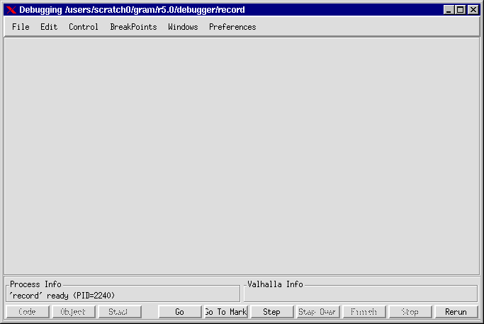

Debugger - Reference Manual
The debugger performs a check of all files used in the program, therefore it can take from a few seconds up to a minute to open the debugger on a large program.
When finished initialising, Valhalla opens its Valhalla Universe containing a number of menus. The figure shows the look of the Valhalla Universe when using Valhalla on the example program from the tutorial.
Figure 1: The Valhalla Universe
The top pane of the Valhalla Universe contains the menus. The middle pane contains the different views, and the bottom pane contains two info areas and a number of buttons.
Editing is disabled during debugging. This means that if you eventually discover a bug in your program and want to correct it, you must close Valhalla. Do this by pressing CTRL-Q or choosing "Close" in the "File" menu. After editing a new compilation is required.
| Debugger - Reference Manual | © Mjølner Informatics |